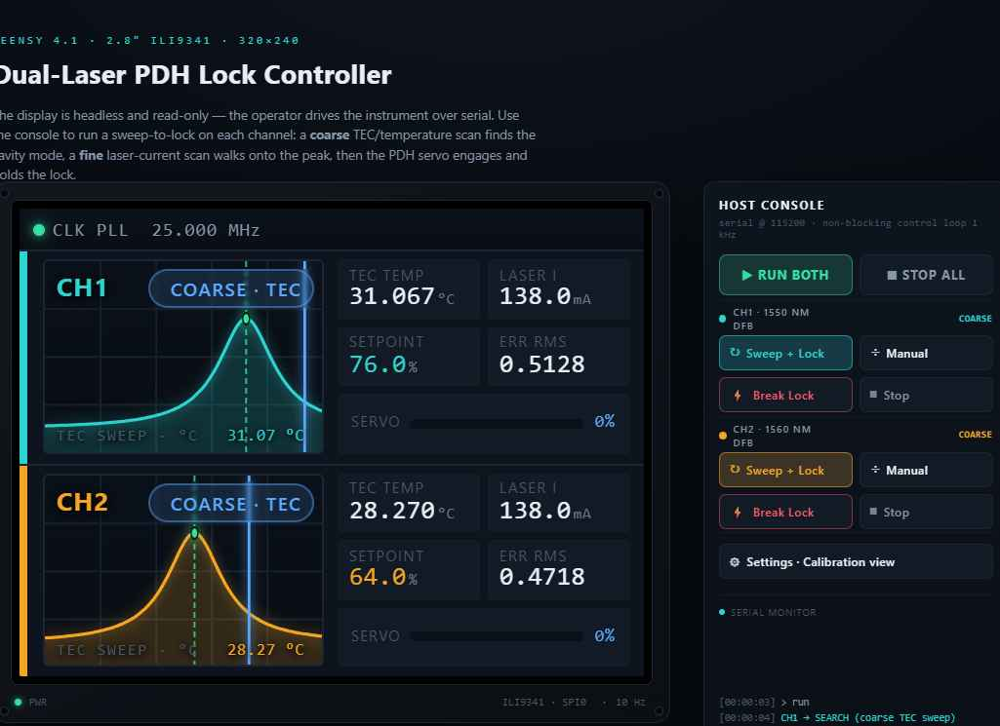
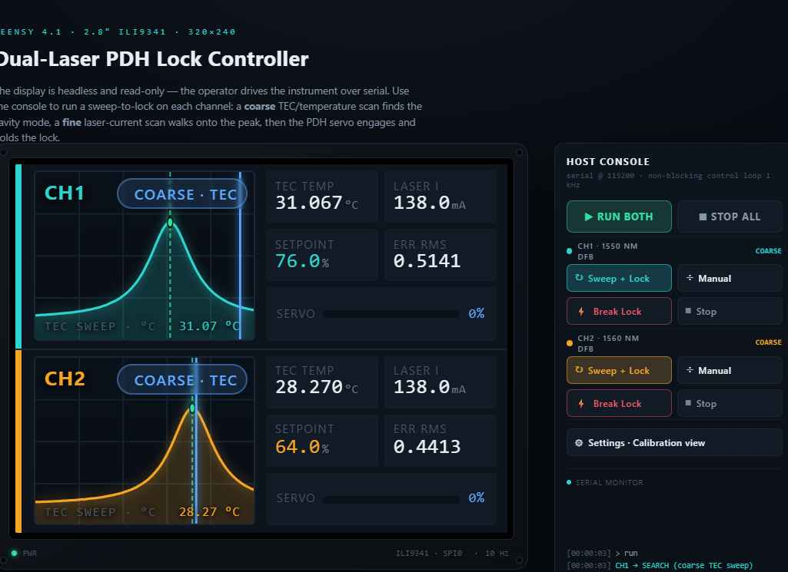
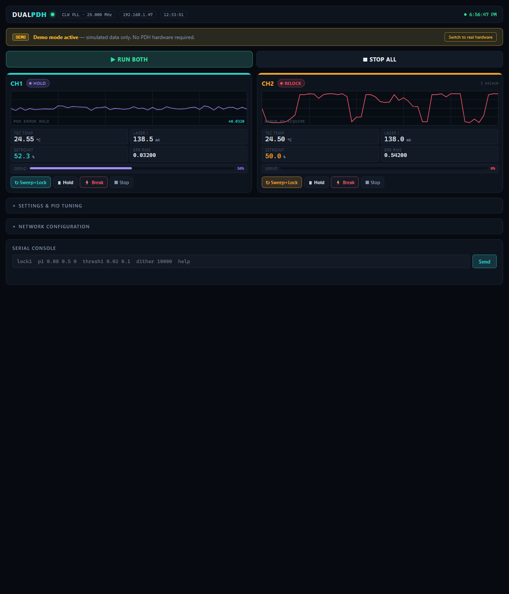
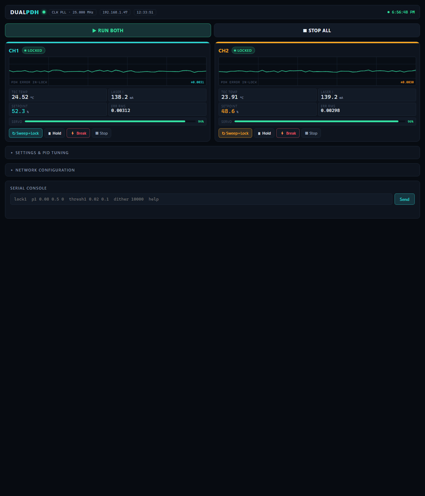

Dual-PDH Controller — Firmware Reference
Introduction
The Dual-PDH Controller runs on a Teensy 4.1 and implements two simultaneous Pound–Drever–Hall (PDH) frequency locks for 1550 nm and 1560 nm DFB lasers. Each channel follows an automated sweep-to-lock sequence: a coarse TEC/temperature scan locates the cavity resonance, followed by a fine laser-current scan that walks onto the transmission peak, then the PDH servo engages and holds the lock.
The 320×240 ILI9341 TFT is read-only — it shows live state, sweep traces, and lock quality. All control is exercised over one of three interfaces: USB serial, Ethernet Telnet, or the built-in HTTP web dashboard.
Hardware Summary
| Component | Interface | Role |
|---|---|---|
| CDCE913 | I²C (0x65) | PLL clock synthesiser — 10 MHz input → 25 MHz reference for both AD9833 chips. EEPROM image is version-stamped and re-programmed automatically on first boot if stale. |
| AD9833 ×2 | SPI | Direct Digital Synthesis oscillators generating the PDH dither sine. CH1 on CS pin 2, CH2 on CS pin 3. Default frequency: 10 kHz. |
| AD5064 | SPI | Quad 16-bit DAC. Channel 0 = CH1 laser current setpoint, channel 1 = CH2 laser current setpoint. Channels 2–3 reserved for TEC setpoints. |
| ILI9341 | SPI (CS 15, DC 14) | 2.8″ 320×240 colour TFT, landscape orientation. Read-only instrument display at 10 Hz. |
| Teensy 4.1 ETH | Built-in PHY | 10/100 Ethernet via QNEthernet library. DHCP with static fallback 192.168.1.200. mDNS hostname: dual-pdh.local. |
| NTC ×2 | Analog A8/A9 | Thermistors on TEC stages. Beta-equation conversion to °C (R₂₅ = 10 kΩ, β = 3950). |
| PDH error ×2 | Analog A0/A1 | Demodulated PDH error signals. 12-bit ADC, normalised to −1…+1 around midscale. |
Control Interfaces
All three interfaces share an identical command set. Responses are identical plain text regardless of interface.
- Any terminal program
- Arduino Serial Monitor
- Available immediately on power-up
- 1 Hz debug telemetry printed automatically
telnet dual-pdh.localtelnet 192.168.1.200- Prompt
>after each command - Backspace supported
http://dual-pdh.local- Live traces poll at 500 ms
- PID / threshold sliders
GET /api/status→ JSONPOST /api/cmd→ text
GET /api/status returns a complete telemetry object
including both channel states, PID gains, thresholds, error RMS, temperatures, laser
currents, and PLL status. Suitable for logging with any HTTP client (curl, Python requests, LabVIEW).
Firmware File Overview
The sketch lives in Teensy/teensyskeletoninArduinoIDE/.
Each logical subsystem is a .h/.cpp pair compiled
by the Arduino build system. The main .ino ties them together
and holds setup() / loop().
| File(s) | Type | Role |
|---|---|---|
| config.h | Header only |
Hardware configuration
All
#defines for pin numbers, ADC/DAC constants, NTC thermistor coefficients, laser IMON scaling, dither frequency, control loop timing, and display refresh rate. Every tunable hardware constant lives here. |
| cdce913.h / .cpp | I²C driver |
CDCE913 PLL clock synthesiser
Reads the EEPROM version byte; re-programs the chip only when the image changes (version-stamped at 0x51). Polls for PLL lock after startup. Optional 25 MHz self-test via
FreqCount on pin 9. |
| ad9833.h / .cpp | SPI driver |
AD9833 DDS — dither oscillators
Resets both chips on startup, then programs the 28-bit frequency word for a sine output. Frequency is live-tunable via the
dither command without interrupting the servo loops. |
| ad5064.h / .cpp | SPI driver |
AD5064 quad 16-bit DAC — setpoints
Writes 24-bit frames (CMD=0x3, write-and-update) to each DAC channel.
ad5064_set_midscale() is called at startup to centre all outputs before the control loops activate, preventing transients on the laser drivers. |
| pid.h / .cpp | Algorithm |
Discrete PID controller
Anti-windup integrator clamp, derivative on error.
pid_step() returns the output clamped to [out_min, out_max]. pid_to_dac() maps the ±1 output to a 16-bit unsigned DAC code. Integrator and previous-error state are reset when gains are changed via command. |
| lock.h / .cpp | State machine |
PDH lock state machine
Defines the
LockState enum (IDLE, SEARCH, ACQUIRE, LOCKED, HOLD, RELOCK) and the LockChannel struct that carries per-channel thresholds, timestamps, and relock counters. lock_enter() records the entry time for timeout tracking. |
| display.h / .cpp | TFT renderer |
320×240 ILI9341 dashboard
Draws the full pixel-matched instrument display at 10 Hz via
display_update(). Renders state-appropriate traces (Lorentzian sweep peak, dispersive S-curve at acquisition, noise trace in lock, railing trace on fault), stat cells, servo health bar, and top status bar. Consumes a DispModel struct populated by the main loop. |
| comms.h / .cpp | Command processor |
Unified CLI command parser & JSON generator
All commands are processed here regardless of which interface delivered them.
comms_process() takes a Print& sink so responses go directly to Serial, a TCP client, or any other Arduino Print subclass. comms_json_status() streams a complete JSON telemetry object. |
| network.h / .cpp | Ethernet stack |
QNEthernet HTTP + Telnet server
Initialises the Teensy 4.1 built-in Ethernet PHY via QNEthernet. DHCP with automatic static-IP fallback (192.168.1.200). Listens on port 80 for HTTP (routes GET /, GET /api/status, POST /api/cmd, OPTIONS) and port 23 for a Telnet CLI. HTTP request parsing is timeout-guarded (200 ms per header line). Non-blocking — services up to 4 HTTP connections per
network_poll() call. |
| webpage.h | Embedded asset |
Self-contained HTML dashboard
The entire web UI as a C++ raw-string literal (
R"HTMLEND(...)HTMLEND"). Served verbatim at GET /. Contains inline CSS (dark instrument theme matching the TFT palette), inline JavaScript (trace rendering ported from pdh-screen.js), and a command console. Polls /api/status every 500 ms. |
| teensyskeletoninArduinoIDE.ino | Main sketch |
Entry point — setup() / loop()
Declares all global objects (
tft, ch[2], pid[2], disp, g_dither_freq). Drives the 1 kHz control loop (elapsedMicros loopTimer), 10 Hz display/network tick, 1 Hz debug print, and USB serial line buffer. Calls into all modules. |
| net_settings.h / .cpp | EEPROM settings |
Network settings persistence
Stores IP, subnet, gateway, hostname, and DHCP flag in Teensy EEPROM emulation (4284 bytes of flash-backed storage). A 32-bit magic number (
0x50444831 = "PDH1") detects first-boot and writes defaults automatically. net_parse_ip() validates dotted-decimal strings; net_fmt_ip() formats them for display and JSON. |
| demo.h / .cpp | Hardware simulation |
Demo mode — Teensy + TFT only
Always compiled. Controlled at runtime by the
demo on / demo off command — no recompile required. Replaces real ADC reads and PID control with a physics-flavoured simulation: 10-second TEC sweep → 2-second PID convergence → 40-second in-lock with organic drift → 1.5-second fault → retry. CH2 starts 5 seconds later so the channels are never in the same state simultaneously. The setting is saved to EEPROM and persists across power cycles. |
| serial_console.h / .cpp | Compatibility stub |
Legacy stub (delegates to comms)
Retained for build compatibility. The function body is empty — USB serial is now handled directly in
loop() via comms_process(). |
config.h — Hardware Configuration
Single header included by every other module. Contains three categories of defines:
- Pin mapping — all Teensy 4.1 pin numbers matched to the schematic net names (I²C, SPI, DDS CS/RESET, DAC CS/LDAC/CLR, TFT, analog inputs).
- Scaling constants —
LASER_IMON_MA_PER_LSB, NTC thermistor beta coefficients, ADC reference, DAC midscale code. - Timing —
CONTROL_PERIOD_US(1000 µs = 1 kHz),DISPLAY_PERIOD_MS(100 ms = 10 Hz),SCAN_PERIOD_MS(5000 ms sweep animation),DEBUG_PERIOD_MS(1000 ms).
LASER_IMON_MA_PER_LSB defaults to 0.0806 mA/LSB (~330 mA full-scale on 12-bit ADC). Adjust this value and the NTC coefficients to match your actual hardware.cdce913.h / .cpp — PLL Clock
Programs the CDCE913 via I²C to synthesise 25 MHz from the 10 MHz board reference. The 32-byte EEPROM image is version-stamped; the chip is re-programmed only when the version byte differs from the compiled image. cdce_wait_for_lock() polls the lock-detect bit with a 200 ms timeout. cdce_selftest_25mhz() uses the Teensy FreqCount library to measure the output on pin 9 and verify 25.000 ±10 kHz.
ad9833.h / .cpp — Dither DDS
Each AD9833 receives a three-word SPI transaction to load a 28-bit frequency register (B28=1 mode). The dither frequency is set from g_dither_freq (default 10 kHz) and can be changed live via the dither command. Both chips share the SPI bus and are differentiated by their FSYNC (chip-select) lines.
ad5064.h / .cpp — Setpoint DAC
All writes use command code 0x3 (write-and-update), making each channel's output settle immediately on the falling CS edge. LDAC is tied low so no separate latch pulse is required. Channels 2 and 3 are currently midscale-initialised and reserved for TEC setpoints.
pid.h / .cpp — PID Controller
Each channel has an independent PID struct. The integrator is clamped symmetrically to integrator_limit (default 0.5) to prevent windup during acquisition. When gains are changed via p1 / p2 commands, integrator and prev_err are zeroed to prevent a step transient on the output.
lock.h / .cpp — State Machine
See the States & Transitions section below for the full state diagram. Key struct fields on LockChannel:
lock_threshold— |error| below which ACQUIRE transitions to LOCKED (default 0.02).acquire_threshold— |error| above which SEARCH transitions to ACQUIRE, and above which LOCKED transitions to RELOCK (default 0.10).acquire_timeout_ms— ACQUIRE aborts to RELOCK after this many ms without achieving lock (default 2000 ms).relock_backoff_ms— base backoff before retrying from RELOCK; multiplied by (1 + relock_attempts) for exponential back-off (default 500 ms).
display.h / .cpp — TFT Renderer
Reads a DispModel struct (filled by the main loop at 10 Hz) and renders the full 320×240 display. Each of the six lock states maps to a distinct trace style:
- IDLE — dashed flat baseline.
- SEARCH — filled Lorentzian transmission peak + moving scan-marker line. Peak position is fixed; scan phase advances over
SCAN_PERIOD_MS. - ACQUIRE — transmission curve + overlaid dispersive PDH S-curve + setpoint dot at peak.
- LOCKED — tight noise trace; amplitude driven by live
err_rms. - HOLD — wider noise trace (amplitude 10× locked).
- RELOCK — railing/diverging random-walk trace in fault red.
comms.h / .cpp — Command Processor
comms_process(line, out, ch, pid, disp) is the single entry point for all command handling. The Print& argument accepts Serial, an EthernetClient, or any other Arduino Print subclass, making it trivial to add new interfaces.
comms_json_status() streams JSON directly without intermediate buffering, which keeps heap usage flat even under rapid polling.
net_settings.h / .cpp — EEPROM Settings
Settings are stored in the Teensy's EEPROM emulation (4 KiB of flash-backed storage at byte offset 0). The struct is 77 bytes including the 4-byte magic header. On first boot — or after a firmware flash that changes the magic number — defaults are written automatically: DHCP on, static fallback 192.168.1.200/24, hostname "dual-pdh".
netset command, not in the control loop. The current code only writes on explicit commands.network.h / .cpp — Ethernet
Requires the QNEthernet library by Luni64 (install via Arduino Library Manager). Uses the Teensy 4.1's built-in 10/100 Ethernet MAC/PHY — no external W5500 or similar chip is needed.
The HTTP parser reads one header line at a time with a 200 ms timeout per line; malformed or stalled connections are dropped cleanly. POST bodies up to 127 bytes are supported (sufficient for all commands). Responses use HTTP/1.0 with the connection closed after each response.
demo.h / .cpp — Hardware Simulation
Always compiled regardless of mode. demo_update() is called at 1 kHz from loop() only when the runtime flag g_demo_mode is true. It writes directly to DispModel and LockChannel state, so the TFT display, web dashboard, Telnet CLI, and USB serial show live animated data — indistinguishable from real operation.
When demo off is issued, g_demo_mode is set false, the DAC is reset to midscale, and lock_init() is called on both channels. When demo on is issued, demo_init() restarts the simulation from the beginning. Both transitions are instantaneous and the new setting is saved to EEPROM immediately.
webpage.h — Embedded Dashboard
The dashboard is ~12 KB of HTML/CSS/JS stored as a C++ raw-string literal and served verbatim. It requires no external CDN or filesystem. The JavaScript trace renderer is a direct port of pdh-screen.js from the desktop prototype, so the browser view matches the TFT display exactly.
teensyskeletoninArduinoIDE.ino — Main Sketch
Loop priorities (highest to lowest):
- USB serial input — polled every loop iteration via
Serial.available(). Lines are buffered until\nor\r, then dispatched tocomms_process(). - 1 kHz control loop — gated by
elapsedMicros loopTimer. Reads ADC, runs both channel state machines and PID steps, accumulates RMS. - 10 Hz display + network tick — gated by
millis()delta. UpdatesDispModel, callsdisplay_update(), then callsnetwork_poll(). Placed after the display update so Ethernet servicing cannot delay a control tick. - 1 Hz debug print — per-channel state, error, RMS, temperature, and laser current to serial.
Lock State Machine
Each channel has an independent state machine. States and transitions are identical for both channels; only the DAC channel index and ADC input differ.
| State | Entry condition | Action | Exit condition |
|---|---|---|---|
| IDLE | Power-on, stop command, or explicit lock_enter(IDLE) |
No output. DAC holds last value. Display shows flat baseline. | lock1 / lock2 command → SEARCH |
| SEARCH | lock1 / lock2 command, or RELOCK backoff expires |
Dither active. Polls |error| each 1 kHz tick. Display animates a sweep marker across the Lorentzian trace over 5 s. | |error| > acquire_threshold → ACQUIRE |
| ACQUIRE | Error signal exceeds acquire_threshold |
PID loop active, output to DAC channel. Integrator building. Display shows transmission + S-curve overlay. | |error| < lock_threshold → LOCKEDTimeout ( acquire_timeout_ms) → RELOCK |
| LOCKED | Error RMS drops below lock_threshold |
PID maintains lock. RMS accumulator runs. Display shows tight in-lock noise trace. Servo health bar fills. | |error| > acquire_threshold → RELOCKbreak command → RELOCKhold command → HOLD |
| HOLD | hold1 / hold2 command |
DAC output frozen. No PID computation. Display shows wider noise trace. Servo health at 50%. | lock command → SEARCHstop command → IDLE |
| RELOCK | Lock loss or acquire timeout | Backoff timer runs. Increments relock_attempts. Backoff = 500 ms × (1 + attempts). Display shows railing fault trace. |
Backoff expires → SEARCHstop command → IDLE |
lock1 / lock2 commands start them independently; lock1 followed immediately by lock2 (or the web "RUN BOTH" button) starts both with a shared timeline.
TFT Display (320×240)
The 2.8″ ILI9341 display is divided into three zones: a 22-pixel top status bar and two equal channel panels (109 px each). All content is rendered by display.cpp at 10 Hz.



Display Layout
| Zone | Pixels | Content |
|---|---|---|
| Top bar | 320 × 22 | PLL lock dot (green/amber), CLK PLL / CLK UNLK label, reference clock MHz |
| CH1 panel | 320 × 109 | Teal rail (4 px), plot area (144 × 100), stat cells 2×2, servo health bar |
| CH2 panel | 320 × 109 | Amber rail (4 px), plot area (144 × 100), stat cells 2×2, servo health bar |
Stat Cells (per channel)
| Cell | Source | Format |
|---|---|---|
| TEC TEMP | NTC thermistor via beta equation | 24.50 °C |
| LASER I | IMON ADC × LASER_IMON_MA_PER_LSB | 138.2 mA |
| SETPOINT | DAC code / 65535 × 100 | 52.3 % |
| ERR RMS | √(Σ err²/N) over last display interval | 0.0034 |
Web Dashboard
Navigate to http://dual-pdh.local (or the device IP) in any modern browser.
The page is fully self-contained — no internet connection, CDN, or extra files required.
It is served directly from the Teensy's flash memory (embedded in webpage.h)
and polls /api/status every 500 ms to update live traces and telemetry.





demo off, the DEMO banner disappears and both channels
run the real PID servo. The page is otherwise identical.

p1 / thresh1 command immediately.
The Global section exposes the dither frequency.

API Endpoints
| Method | Path | Description |
|---|---|---|
GET | / | Full HTML dashboard (self-contained, ~12 KB) |
GET | /api/status | JSON telemetry object (both channels) |
POST | /api/cmd | Body: plain-text command. Response: plain-text output. |
OPTIONS | * | CORS preflight (Access-Control-Allow-Origin: *) |
Example: curl status poll
$ curl http://dual-pdh.local/api/status | python3 -m json.tool { "t": 45231, "pll": 1, "refclk": 25.000, "dither": 10000, "ip": "192.168.1.200", "ch": [ { "n": 1, "st": "LOCKED", "rms": 0.00312, "temp": 24.52, "ima": 138.2, "setp": 52.30, "scan": 0.000, "peak": 0.614, "qual": 0.844, "relk": 0, "kp": 0.08000, "ki": 0.50000, "kd": 0.00000, "lthr": 0.02000, "athr": 0.10000 }, { "n": 2, "st": "SEARCH", "rms": 0.42100, "temp": 23.87, "ima": 138.0, "setp": 50.00, "scan": 0.347, "peak": 0.600, "qual": 0.000, "relk": 0, "kp": 0.08000, "ki": 0.50000, "kd": 0.00000, "lthr": 0.02000, "athr": 0.10000 } ] }
Command Reference
Commands are identical on all three interfaces. Channel index is always 1 or 2 (not 0-based). Responses are plain text; the s/status command returns formatted multi-line text on the CLI and JSON when called from the web.
lock1 then lock2 in quick succession (or the web "RUN BOTH" button) to start both channels.
> lock1 CH1 -> SEARCH
> lock1 CH1 -> SEARCH > lock2 CH2 -> SEARCH
CH1 SEARCH err=0.0312 rms=0.42100 T=26.3 I=138.0 mA CH1 peak -> ACQUIRE CH1 ACQUIRE err=0.0180 rms=0.18200 T=26.3 I=138.4 mA CH1 LOCKED CH1 LOCKED err=0.0021 rms=0.00340 T=26.3 I=138.4 mA
> stop2 CH2 -> IDLE
> stop1 CH1 -> IDLE > stop2 CH2 -> IDLE
lock1/lock2 to re-enter SEARCH, or stop to go IDLE.
> hold1 CH1 -> HOLD
> lock1 CH1 -> SEARCH
> break1 CH1 lock broken -> RELOCK
> break2 CH2 not locked
relock_attempts counter without changing channel state. The backoff time is multiplied by (1 + relock_attempts), so resetting this counter returns the backoff to the base 500 ms. Use after diagnosing and correcting a recurring lock-loss cause.
> reset1 CH1 relock counter reset
> p1 0.08 0.5 0 CH1 PID kp=0.0800 ki=0.5000 kd=0.0000
> p2 0.12 0.3 0.002 CH2 PID kp=0.1200 ki=0.3000 kd=0.0020
> p1 0.1 0.5 Usage: p1 <kp> <ki> <kd>
> p1 0.15 0 0 CH1 PID kp=0.1500 ki=0.0000 kd=0.0000
lock — |error| below which ACQUIRE considers the lock achieved (default 0.02, normalised ±1 scale).
acq — |error| above which SEARCH enters ACQUIRE, and above which LOCKED triggers RELOCK (default 0.10).
Thresholds are in the normalised ADC scale (0…1, where 1.0 = full ADC range from midscale). Tighten lock for quieter cavities; loosen it if acquisition is failing.
> thresh1 0.02 0.10 CH1 lock_thr=0.02000 acq_thr=0.10000
> thresh1 0.005 0.08 CH1 lock_thr=0.00500 acq_thr=0.08000
> thresh2 0.02 0.15 CH2 lock_thr=0.02000 acq_thr=0.15000
> thresh1 0.02 Usage: thresh1 <lock> <acq>
g_dither_freq and included in the JSON status. Note: frequency is not saved to non-volatile memory — it resets to DITHER_FREQ_HZ (10 kHz default) on power cycle.
> dither 10000 Dither -> 10000 Hz
> dither 50000 Dither -> 50000 Hz
> dither 50 Usage: dither <hz> (100–500000)
GET /api/status which returns all the same data in structured JSON.
> s CH1 LOCKED rms=0.00312 temp=24.5°C I=138.2mA setp=52.3% relk=0 PID kp=0.0800 ki=0.5000 kd=0.0000 thr lock=0.0200 acq=0.1000 CH2 SEARCH rms=0.41800 temp=23.9°C I=138.0mA setp=50.0% relk=0 PID kp=0.0800 ki=0.5000 kd=0.0000 thr lock=0.0200 acq=0.1000 dither=10000 Hz
> s CH1 LOCKED rms=0.00298 temp=24.5°C I=138.3mA setp=52.4% relk=0 PID kp=0.0800 ki=0.5000 kd=0.0000 thr lock=0.0200 acq=0.1000 CH2 RELOCK rms=0.54200 temp=24.1°C I=138.0mA setp=50.0% relk=3 PID kp=0.0800 ki=0.5000 kd=0.0000 thr lock=0.0200 acq=0.1000 dither=10000 Hz
> d LOCK1=2064 LOCK2=2031 NTC1=1820 NTC2=1834 LAS1=1712 LAS2=1709
LOCK1=2064 → PDH error CH1: (2064-2047)/2047 = +0.0083 (near zero, locked)
LOCK2=2031 → PDH error CH2: (2031-2047)/2047 = -0.0078 (near zero, locked)
NTC1 =1820 → NTC voltage ratio → ~24.5 °C (via beta equation)
NTC2 =1834 → ~24.2 °C
LAS1 =1712 → 1712 × 0.0806 = 138.0 mA
LAS2 =1709 → 1709 × 0.0806 = 137.8 mA
cdce913.cpp and incrementing the version byte. The operation takes approximately 25 ms and does not interrupt the control loops.
Under normal operation this command is never needed —
cdce_program_if_needed() in setup() handles automatic programming.
> r CDCE913 EEPROM reprogrammed
> help Commands: s / status — telemetry lock1 / lock2 — start sweep+lock stop1 / stop2 — stop to IDLE hold1 / hold2 — enter HOLD break1 / break2 — break lock -> RELOCK reset1 / reset2 — clear relock counter p1 kp ki kd — set CH1 PID gains p2 kp ki kd — set CH2 PID gains thresh1 lock acq — set CH1 thresholds thresh2 lock acq — set CH2 thresholds dither <hz> — set dither frequency d — raw ADC dump r — reprogram CDCE913
Network Configuration
The Teensy 4.1 uses its built-in 10/100 Ethernet PHY via the QNEthernet library. Settings (IP, subnet, gateway, hostname, DHCP flag) are saved to Teensy EEPROM and persist across power cycles. They can be changed at any time without reflashing.
Default Settings (first boot)
| Setting | Default value | Notes |
|---|---|---|
| Mode | DHCP | Router assigns address automatically |
| Static IP fallback | 192.168.1.200 | Used if DHCP times out after 3 s |
| Subnet | 255.255.255.0 | Standard /24 |
| Gateway | 192.168.1.1 | Standard home/lab router |
| Hostname | dual-pdh | Accessible as dual-pdh.local via mDNS |
Ethernet: DHCP... IP: 192.168.1.45. Or type netinfo at any time — it shows both the active IP and the saved static fallback.> netinfo Mode: DHCP Static IP: 192.168.1.200 Subnet: 255.255.255.0 Gateway: 192.168.1.1 Hostname: dual-pdh Active IP: 192.168.1.47 (Changes require 'netreset' to take effect)
> netinfo Mode: Static Static IP: 192.168.10.50 Subnet: 255.255.255.0 Gateway: 192.168.10.1 Hostname: laser-lab Active IP: 192.168.10.50
netreset is called (or the device reboots). This allows multiple settings to be changed atomically before applying.
Hostname rules: alphanumeric characters and hyphens only, 1–31 characters. The device becomes accessible at
<hostname>.local via mDNS after netreset.
> netset dhcp off Static IP mode. Run 'netreset' to apply. > netset ip 192.168.10.50 Static IP saved. Run 'netreset' to apply. > netset gw 192.168.10.1 Gateway saved. Run 'netreset' to apply. > netreset Restarting Ethernet with saved settings... Active IP: 192.168.10.50
> netset host laser-lab Hostname saved: laser-lab Run 'netreset' to apply. mDNS: laser-lab.local > netreset Active IP: 192.168.1.47
> netset dhcp on DHCP enabled. Run 'netreset' to apply.
> netset ip 999.0.0.1 Invalid IP address (use a.b.c.d)
> netset host my device Invalid hostname (a-z 0-9 hyphens, max 31 chars)
If called over Telnet and the IP address changes, the Telnet session will disconnect — reconnect using the new IP or hostname.
> netreset Restarting Ethernet with saved settings... Ethernet: DHCP... IP: 192.168.1.47 hostname: laser-lab.local HTTP port 80 | Telnet port 23 network_reinit: done Active IP: 192.168.1.47
The Network Configuration panel in the web dashboard sends all five
netset commands followed by netreset in sequence. The page will briefly
show "offline" then reconnect automatically when the device comes back.
Demo Mode
Demo mode lets you run the full software stack — TFT display, web dashboard, Telnet CLI, USB serial, and all commands — with only a Teensy 4.1 and the ILI9341 TFT connected. No PDH electronics, lasers, TECs, or ADC signals are required.
Demo mode is a runtime setting stored in EEPROM. Toggle it with a single command from any interface — no recompile or reflash required. The setting persists across power cycles.
demo off at any time — via USB serial,
Telnet, or the web dashboard — to switch to real hardware. Type demo on to go back.
The web dashboard shows a yellow DEMO banner when active, with a one-click toggle button.
DEMO_MODE_DEFAULT in config.h
(default 1 = demo on). This value is only written to EEPROM when the EEPROM is blank — i.e., on the first
flash of new firmware. After that, the runtime command is the only way to change it.
Demo Cycle
Each channel runs an independent loop. CH2 is staggered by 5 seconds so the channels are never in the same state simultaneously — you always have something interesting on screen.
| State | Duration | What you see |
|---|---|---|
| IDLE | 0.5 s (initial only) | Flat dashed baseline. Both channels at 24 °C, 138 mA. |
| SEARCH | 10 seconds | TEC temperature sweeps linearly (CH1: 18→32 °C, CH2: 20→30 °C). Lorentzian transmission peak fixed at a random position; scan-marker line moves left to right. ERR RMS ≈ 0.42. |
| ACQUIRE | 2 seconds | Transmission peak + dispersive S-curve overlay. ERR RMS decays as 0.22·e−5t + 0.003. Servo health bar fills via smoothstep curve. |
| LOCKED | 40 seconds | Tight noise trace; ERR RMS ≈ 0.003. TEC temp and laser I drift slowly with sinusoidal organic noise. Servo health 92–97 %. |
| RELOCK | 1.5 seconds | Railing fault trace. ERR RMS climbs 0.35 → 0.60. Simulates a lock loss before the channel retries. |
Commands in Demo Mode
All standard commands work while the demo is running:
stop1/stop2— pauses the demo on that channel (stays IDLE until commanded)lock1/lock2— resumes demo from SEARCH with a fresh random peak positionhold1/hold2— the demo respects HOLD and will not auto-advance out of its— shows simulated telemetry with a[DEMO MODE]prefix- All
netset/netresetcommands work normally - All
p1,thresh1,dithercommands save correctly (effective when real hardware is connected)
The web dashboard shows a yellow DEMO banner in the top bar while demo mode is active, with a one-click "Switch to real hardware" button. The Network Configuration panel also contains a toggle button.
demo on — starts the hardware simulation. Calls
demo_init() to reset
both channels to IDLE and begin the sweep→lock sequence. The PDH electronics are not driven
(DAC outputs are held at midscale from the last real-hardware run, or from startup).
demo off — enters real hardware mode. Resets the DAC to midscale via
ad5064_set_midscale(), calls lock_init() on both channels, and begins
reading live ADC signals. Type lock1 / lock2 to start the sweep.
> demo off Demo mode OFF — real hardware mode. Type 'lock1' / 'lock2' to start sweep+lock.
> demo on Demo mode ON — simulation running. Type 'demo off' to switch to real hardware (persists across reboot).
> demo on Demo mode already ON
> s [DEMO MODE — type 'demo off' to switch to real hardware] CH1 LOCKED rms=0.00301 temp=24.5°C I=140.5mA setp=52.3% relk=0 PID kp=0.0800 ki=0.5000 kd=0.0000 thr lock=0.0200 acq=0.1000 CH2 SEARCH rms=0.42100 temp=24.1°C I=138.0mA setp=43.0% relk=0 PID kp=0.0800 ki=0.5000 kd=0.0000 thr lock=0.0200 acq=0.1000 dither=10000 Hz
$ curl -s http://dual-pdh.local/api/status | python3 -m json.tool | grep demo "demo": 1,
# First time connecting real PDH electronics: > demo off Demo mode OFF — real hardware mode. > d LOCK1=2064 LOCK2=2031 NTC1=1820 NTC2=1834 LAS1=1712 LAS2=1709 # Verify ADC readings look sensible, then start locks: > lock1 CH1 -> SEARCH > lock2 CH2 -> SEARCH
Typical Operating Sequence
- Connect USB. Open terminal at 115200. Confirm
CDCE913: PLL lockedand25 MHz OK. - Type
dand verify all six ADC channels return plausible values (non-zero, not rail at 0 or 4095). - Confirm TEC temperatures with
s— should read near ambient. - Type
lock1. Observe CH1 advancing SEARCH → ACQUIRE → LOCKED on the TFT. - Once CH1 shows LOCKED and ERR RMS < 0.01, type
lock2. - Navigate to
http://dual-pdh.localto monitor both channels from a browser.
d. The LOCK1/LOCK2 readings should change as the laser frequency sweeps through resonance. If they are static, the RF path (mixer, low-pass filter, or AD9833 output) may be disconnected. Reduce acquire_threshold via thresh1 if the signal level is low.